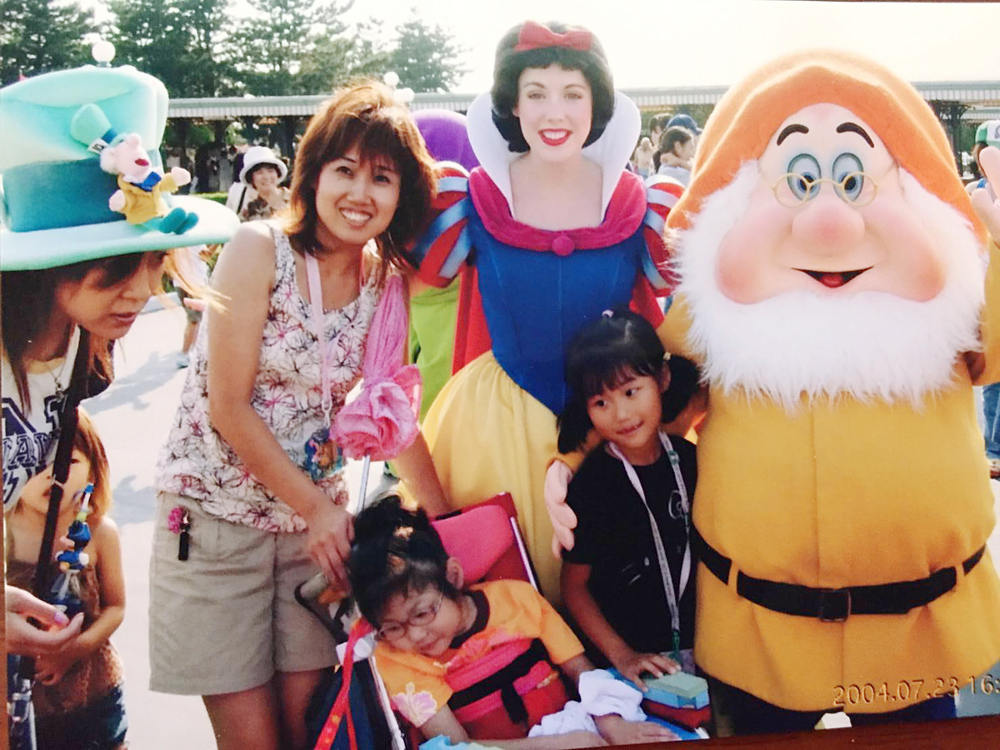
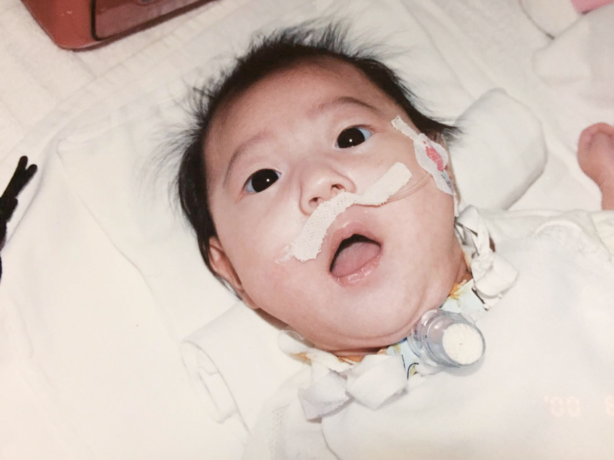
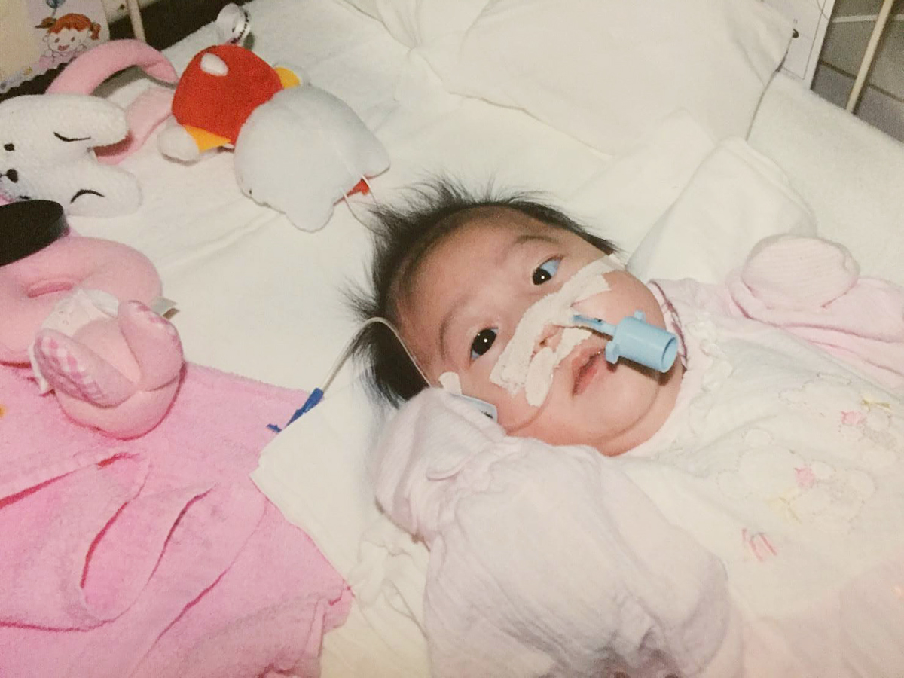
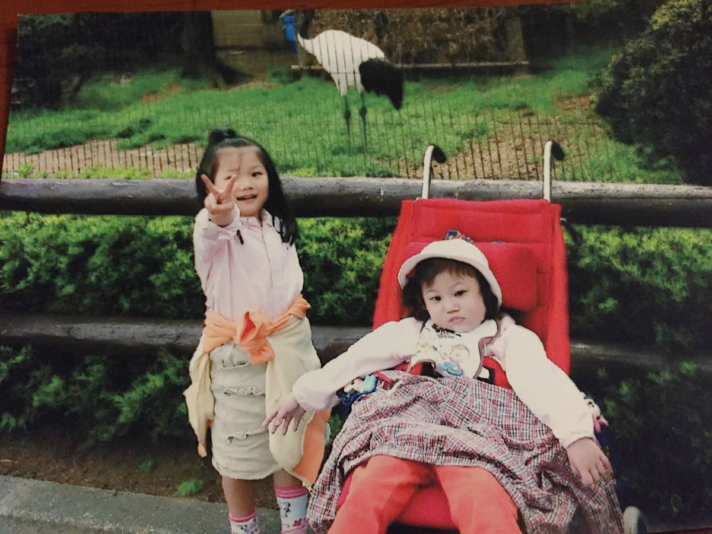
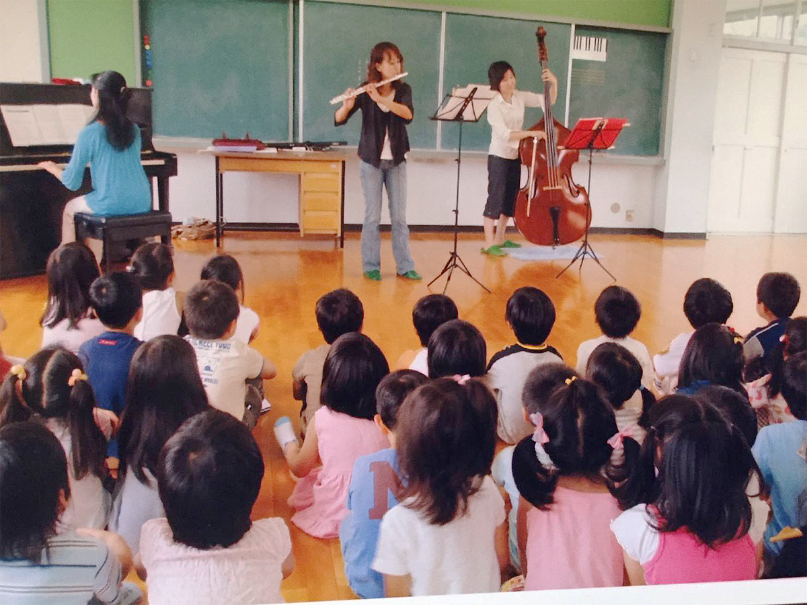
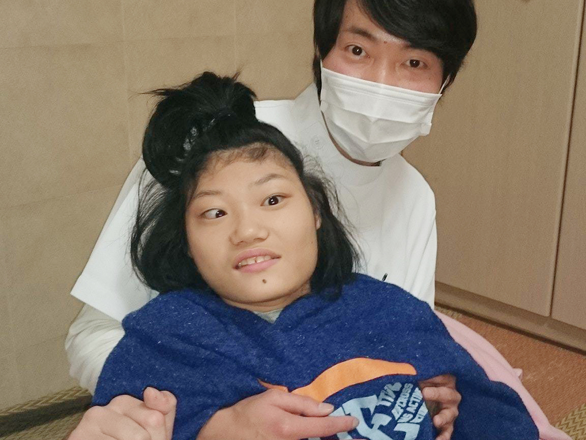
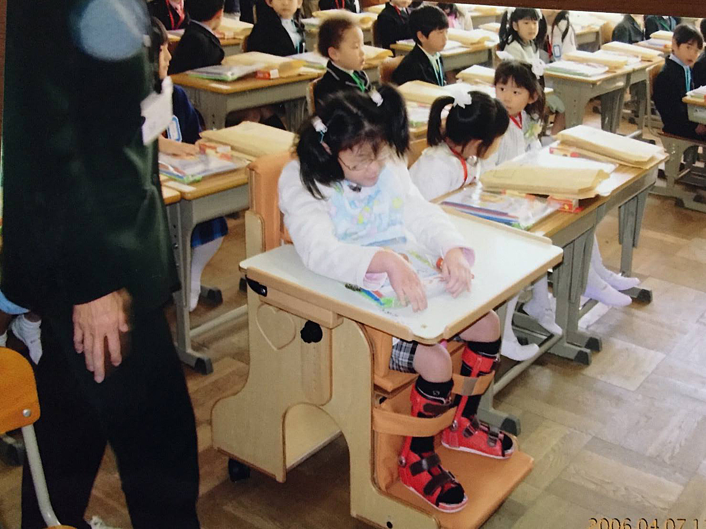
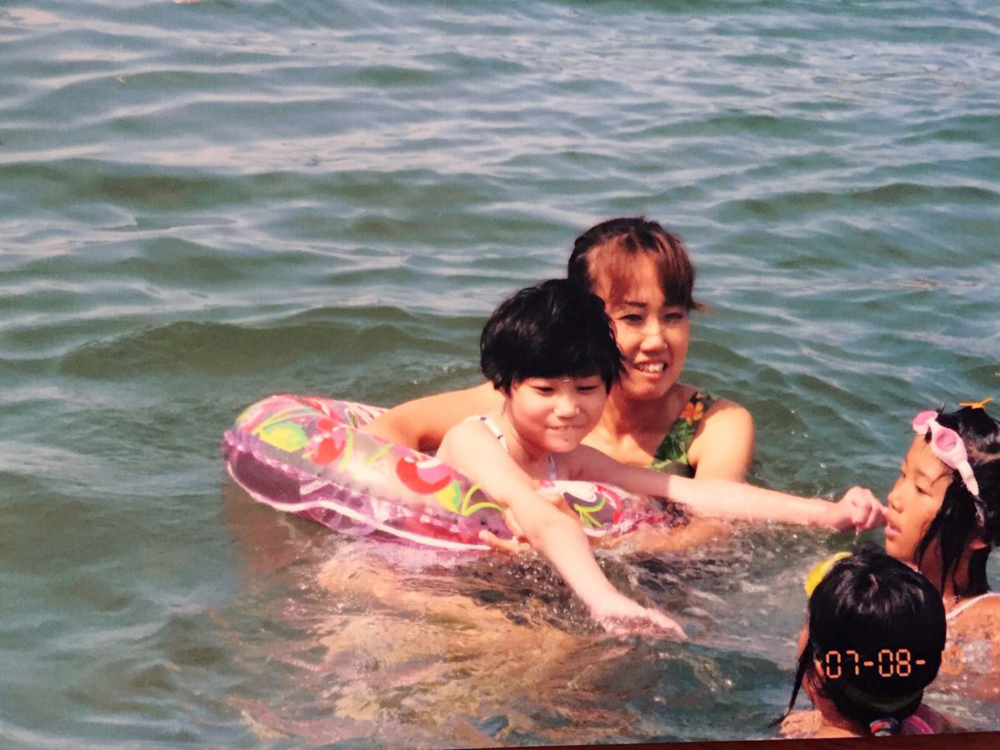
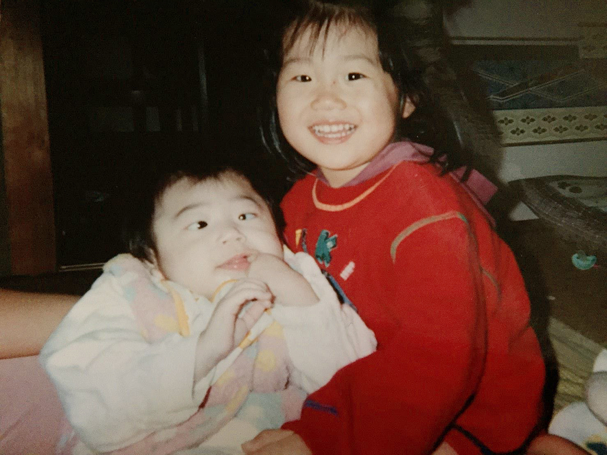

根っからのナースなんです
稲田さんの子どもの頃のことを教えてください。
稲田出身は富山県です。私はどちらかというと負けず嫌いの子どもだったと思います。人の顔色をうかがい、どう思われているのか気になりながらも、自分のやりたいことはやり通したい。そんなわがままな子どもでした。今もそうですけど……。そんな私を両親はヒヤヒヤしながらも暖かく見守ってくれていたと思います。特に12年前に胆管癌で亡くなった父親は私の良き理解者でした。現在、実家の富山県には母親が1人で住んでいます。
看護師を目指したきっかけはなんですか。
稲田恥ずかしながら、単純に手に職をつけたかったからです。高校生で進路を考えたときに何となく「看護師になろうかな」と思って。
社会福祉士の資格も取得されてますよね。
稲田社会福祉士の資格は、娘のちいちゃんを抱えて生きていくために福祉のスペシャリストになろうと思って、32歳のときに通信大学で2年間勉強して取得しました。障害児の母親となり、さまざまな福祉制度を利用しようと思ったときに、わかりやすく、納得できる説明をしてくれる人がいなかったんですよね。そんなふうに感じたのは1度や2度ではなくて。だったら自分で勉強しようと思ったのが、社会福祉士の資格を取得しようと思ったきっかけです。
通信大学のスクーリングに通っている頃、ちょうど父は癌の末期で最もつらい時期だったのですが、私が弱音を吐いたときは優しく、そして頼もしく「頑張れ」と言ってくれました。父の言葉があったからやり通すことができたと思っています。感謝しています。
結局、今は看護師として地域医療に携わっています。どうやら私は根っからのナースのようです。仕事は大変ですが、訪問看護という仕事は好きですね。

「助からない」と言われた命
知陽（ちあき）ちゃんが生まれたときのことを聞かせてください。
稲田ちいちゃんは、石川県輪島市で仮死状態で産まれました。輪島市にはNICUがなくて、金沢市からドクターカーを呼んで、片道2時間以上かけて金沢市の病院に搬送されました。NICUに着いたのは、出産から5時間が経過してから。私は帝王切開だったので、輪島に居残りです。
ちいちゃんに会えたのは、出産から10日後のことでした。NICUに到着した直後、医師から言われたのは「他臓器不全を起こしているのでおそらく助からない」ということ。奇跡的に助かっても、病院から出ることはできないだろうと。
そのあと、ちいちゃんは数々の奇跡を起こしてくれました。ちいちゃんの生命力は、はかり知れない強さです。ここまでの奇跡と軌跡を改めて振り返ると、我が子ながら「すごいなあ、よく頑張ったなあ」と思いますね。

主治医からの説明を受けたときの気持ちを聞かせてください。
稲田なんか、他人事のように取り乱すことなく、淡々と話を聞いていたと思います。「誰の話してるんだろう？」みたいな。そのあと、涙が止まらなくなり、泣きながら搾乳をしていたのを覚えています。ちいちゃんに会えたのが出産から10日経ってからだったので、顔を見るまでは、やはり他人事のように、実感がわきませんでした。とにかく、ちいちゃんに飲ますことができないおっぱいを、毎回泣きながら搾乳してましたね。
ちいちゃんに会ったとき、はじめて現実を目の当たりにして「ママと一緒に生きていこう」と言ってました。生後間もない、ちいちゃんの姿にとてつもない生命力を感じましたね。
当時は、障害を抱えて生きていくことがどういうことなのか、まったく頭の中にはなかったです。ただ、「生きてさえいてくれたら」とそんな気持ちでした。
その後の経過を教えてください。
稲田生後4ヶ月で気管切開、生後10ヶ月で胃食道逆流症の手術を受け、胃ろうを作りました。気管切開は、3歳のときに抜管して閉鎖しています。9歳のときには側湾症の手術も受けました。また、10ヶ月のときに大きな痙攣を起こし、てんかん波形が認められたので、それ以来てんかんの薬は欠かさず飲んでいます。
でも、痙攣発作はこのときだけですね。ただ、感受性が強い分、感情コントロールが難しいです。嬉しいときでもイライラするときでも、感情がはじけてしまうと自分ではどうすることもできなくて、全身硬直したように力が入ります。そんなときは、頓服（とんぷく）のリスペリドンを使っています。

「手術をするか、しないか」悩みました
9歳のときの側弯症の手術についてもう少し詳しく教えてください。
稲田ちいちゃんは4歳くらいから、すでに背骨が曲がりはじめていました。それもS字に曲がっていました。5歳から体幹コルセットを使いはじめましたが、なぜかちいちゃんはコルセットを嫌がることがなく、お風呂と夜寝るとき以外はずっとつけていました。でも、側弯症はどんどん進行して、とくに身長が伸びはじめた8歳くらいから急激に曲がりねじれ、9歳のときに手術を受けました。
どのような手術だったのですか？
稲田12時間の大手術でした。背骨の両脇にパイプをいれて固定し、隙間を埋めるのに自分の骨盤を削り、自己骨移植もしました。そのため、ちいちゃんの首の付け根からお尻まで切開した、1本の傷跡が背中に残っています。
側弯症はあるものの、大きく体調を崩すことなく、家で過ごすことができていたので「手術をするか、しないか」このときの手術が1番悩みました。「手術することのメリット、デメリットは？」「誰か決めて」「あみだくじで決めようか、それともコイン」本気でそんなことも考えていました。
時として、親は子どもの代弁者にならなければいけないこともあります。お姉ちゃんは、もう立派に自分の意思で物事を決める力を持っている。でも、ちいちゃんはこの先もずっと私がちいちゃんの代弁者として生きていく。このことは、17年たった今でも私の肩に、重く重くのしかかっています。判断を誤らないようにと。

知陽ちゃんの名前の由来を教えてください。
稲田ちいちゃんは「知陽」と書いて「ちあき」と呼びます。名前の由来は字のごとく、「知的で太陽のように明るく」との願いを込めてつけました。ちいちゃんはとても感受性の豊かな子だと思います。そばで赤ちゃんが泣いていると心配になり、ものすごく悲しそうな顔でちいちゃんも泣き出します。今までにこのようなことが何度もありました。
音楽も大好きですが、短調の悲しげな曲は苦手で、泣きべそをかきます。我が家は私もちいちゃんのお姉ちゃんも、楽器をやっているのでクラシックやポピュラーミュージックなど幅広い音楽が流れています。
朝は戦場です（笑）
今のお仕事について、詳しく教えてください。
稲田私の仕事は、火曜日から金曜日は朝8時半から17時までの訪問看護です。月・土・日曜日は基本的には休みですが、緊急で呼ばれたり、夜中も電話がかかってきて呼び出しされることもあります。
1日のスケジュールを教えてください。
稲田毎朝5時過ぎに起きて、ちいちゃんのミキサー食とお姉ちゃんの弁当作りから1日が始まります。朝は戦場ですね（笑）6時20分にはちいちゃんの胃ろう注入が開始できるようにおむつ交換を済ませ、座位保持に移乗します。注入はミキサー食ですが、40分くらいかけて注入しています。終わったらネブライザー吸入して、吸引して着替えとおむつ交換をして外出用の車椅子に乗せてと、タイマーをセットしながら分刻みで動いています。
そのあとは、自宅から3分ほどのスクールバスのバス停まで、ちいちゃんを送り出します。月・金曜日は私が連れて行き、火・水・木曜日はヘルパーさんに連れて行ってもらっています。ちいちゃんを送り出したら私はすぐ出勤です。
夕方以降はどのような感じですか？
稲田仕事が17時までなので、仕事の日は帰宅するのが17時30分頃になります。急いで夕食の準備をして、ちいちゃんのミキサー食を作って、18時〜18時半くらいから注入開始。終わったらお風呂、火曜日と金曜日は18時半からヘルパーさんが入浴介助に来てくれます。注入が終わっていない場合は、一旦中断してお風呂に入れてもらいます。それ以外の日は、私がお風呂に入れています。体重32キロのちいちゃんを抱えてお風呂に入れるのは、なかなか重労働です。お風呂が終わり、台所の片付けや洗濯物など、家事が全部終わるのは21時から22時くらいかな。
ちいちゃんは睡眠リズムが不規則で、ときどきオールナイトをするので困っています。これは小さいときから治りません。私自身は、なるべく23時くらいには布団に入るようにしていますが、ちいちゃんがオールナイトの日は寝不足ですね……。
私らしく居続けるために欠かせないもの
リフレッシュ方法を教えてください。
稲田私は中学生、高校生のときに吹奏楽部でフルートを吹いていました。吹奏楽がやめられなくて、2年前から社会人の吹奏楽団に入団しています。毎週日曜日の午前中が練習なんですが、これが私のリフレッシュ法であり、私らしく居続けるために欠かせないものなんです。
演奏会前になると一日練習になります。4月、5月にも演奏会があって、練習は大詰めです。日曜日の吹奏楽団の練習のあいだは、ちいちゃんは日中一時支援を利用しています。お母さんの唯一のわがままで、吹奏楽を続けさせてもらっています。10年くらい前から、フルートのレッスンにも行っています。先生は私と同じ年齢で、気の合う良き友人でもあって、このレッスンも息抜きになっていますね。

家族について教えてください。
稲田ちいちゃんには1歳違いのお姉ちゃんがいます。どんなときでもちいちゃん優先で、さみしい思いをたくさんしたと思います。お姉ちゃんとの関わりで最も気をつけたことは、「どんなときでもお母さんは味方なんだ」と思っていてもらえるようにする、ということ。ちいちゃん優先ではあっても、お姉ちゃんのことはどんなときでも大事に思っている、ということを言葉ではなく心でわかっていて欲しい、そんなふうに思いながら育ててきました。10年前に離婚しているので、現在はちいちゃんとお姉ちゃんと私の3人で暮らしています。
放課後等デイサービスは3ヶ所利用しています
利用している制度はありますか？
稲田障害者医療証というものを使っています。これを使うと、1つの医療機関につき、1ヶ月あたり最大1000円（1回500円、最大2回分まで）の自己負担になります。入院しても、食費など以外の保険適応分は、1ヶ月1000円の負担です。
今年から、訪問リハビリ、訪問看護もこの障害者医療証が使えるようになって、ものすごく助かっています。それ以外に、我が家は母子家庭なので、特別児童扶養手当はもらっています。
現在利用している介護サービスを教えてください。
稲田利用しているサービスは、居宅介護（主に入浴介助）、ガイドヘルパー、放課後等デイサービス、日中一時支援です。居宅介護は、火曜日と金曜日の18時30分から19時30分まで。2人のヘルパーさんが来てお風呂に入れてもらっています。
ガイドヘルパーは、不定期で私の仕事や用事に合わせて利用しています。もう10年以上お世話になっている事業所で、急なお願いも聞いてくれて本当に助かっています。
放課後等デイサービスは3ヶ所利用しています。正直、ちいちゃんは相性がいいデイサービスと、そうではないデイサービスで、帰宅後の様子はまったく異なります。とても正直で、わかりやすい性格なんです。
日中一時支援は、毎週日曜日に利用しています。これは、私が吹奏楽の練習に行くためです。ときどき土曜日に仕事が入るので、そのときも利用しています。毎回同じ事業所でお世話になっていますが、日中一時支援の施設はちいちゃんと相性がいいみたいです。

小学校入学は前例のないことでした
知陽ちゃんの通っていた小学校について教えてください。
稲田ちいちゃんは地域の小学校に通っていました。大阪府高槻市では、重症心身障害児で医療的ケアが必要な子の入学は前例のないことで、「必要なことは私が学校に行ってやります、できる限りお友だちと同じ環境で学校生活を過ごさせてください」と校長先生に言いました。
看護師さんが来るようになるまでは、私が学校に行っていて、送迎や水分補給、お昼ご飯の注入など、最低4回は行っていました。車椅子の座り方や移乗の仕方、発作時の対応など少しずつ先生にも覚えてもらって、感謝です。担任の先生は本当に、ちいちゃんのことを可愛がってくださいました。このことで、ちいちゃんの後輩たちのママさん数人からいろいろ相談されたことがあります。こんなつながりは、ときどきあります。
今でも当時の先生と繋がりはありますか？
稲田数日前、小学校の時に担当してくださっていた先生からメールがきて、「卒業式シーズンになるとちいちゃんのことを思い出す」と書いてありました。今でも、先生とお世話になった看護師さん、当時の校長先生とはときどき連絡をとっています。

サークルや親の会などには入っていますか？
稲田サークルや親の会などは参加していませんが、ちいちゃんが入退院を繰り返していた頃、病院で一緒になっていた同世代のママたちとは今でも連絡を取り合っています。ときどき病院で再会すると、まるで同窓会のように盛り上がりますね（笑）同じ大変な時期を乗り越えた同士、といった感じでしょうか。
2人の娘たちの笑顔を見ることが最高に幸せ
子育てをしていてつらかったことはなんですか？
稲田つらいというか、「悲しいなあ」「さみしいなあ」と思ったことは何度かありますね。ちいちゃんと散歩していたら、知らないおばあちゃんに「あんた、妊娠中に何か悪いことしたんやろ、だからこんな子が生まれたんや」と言われたことがあって。びっくりするやら情けないやら、腹が立つやら「世の中にはそんなふうに考える人もいるんだ！」と思い知らされる出来事でしたね。
ここまでではないですが、何度か傷つくような言葉を言われたことはあります。言っている人は悪気はないんでしょうね。今だったら「そんなふうにしか考えられないなんてさみしい方ですね」なんて言い返していると思いますが（笑）

逆に、子育てをしていて嬉しかったことはなんですか？
稲田ちいちゃんのお姉ちゃんが「ちいちゃんのことは私が守るから安心してね」なんて言ってくれたことがありました。何よりも嬉しい言葉でしたね。障害児のきょうだいは、いろいろな面で難しいことがあります。お姉ちゃんもさまざまな葛藤があったはず。それでも、ちいちゃんのことを大切に思い、そんなふうに言える人に育ってくれたことは、何よりも嬉しいです。そんな2人の娘たちの太陽のように明るい笑顔を見ているときが「最高に幸せ」だと思える瞬間ですね。

いい意味で手抜きをしてほしい
最後に後輩のご家族に伝えたいことを教えてください。
稲田いい意味で、利用できるもの、利用できる人は利用させてもらいましょう。今はそれなりに福祉サービスが充実しています。自分たちだけで抱え込まず、相談できる人を見つけてください。重症心身障害児との生活はきれいごとばかりじゃないですよね。心身ともに疲労困ぱいになることもあります。ママやパパが倒れてしまうと、子どもさんが1番困ります。適度な休息を取れる手段や方法を見つけておいてください。
私はそれがうまくできませんでした。頼れる身内もそばにいなくて、今ほど福祉サービスも充実していなかったので、1人で抱え込んでいました。正直、心身ともに疲労困ぱいで、正常な思考能力を失っていたんじゃないかと思います。皆さんは私のようにならないで、いい意味での手抜きを身につけてください。
そして、私でよければ、いつでも話を聞きます。同じ境遇の先輩ママとして、在宅医療を提供する看護師として、ともに障害児を育てる同士として、あんなことやこんなことをお話しますよ。
健常児も障害児も同じ子ども、同じ生命です。子育てを楽しんでください。
ご協力いただいた稲田さま、知陽ちゃんに心から感謝します。